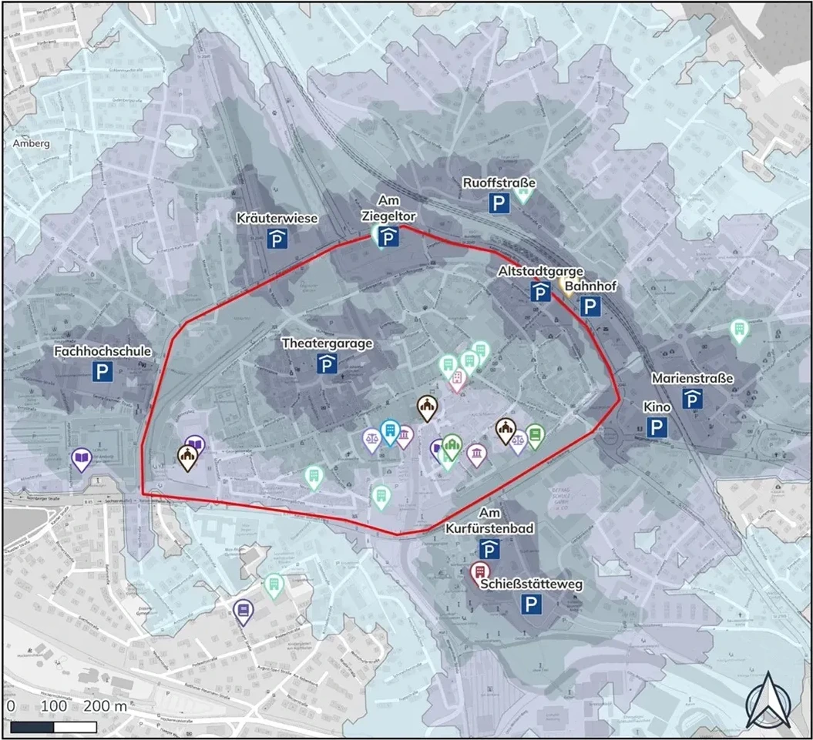
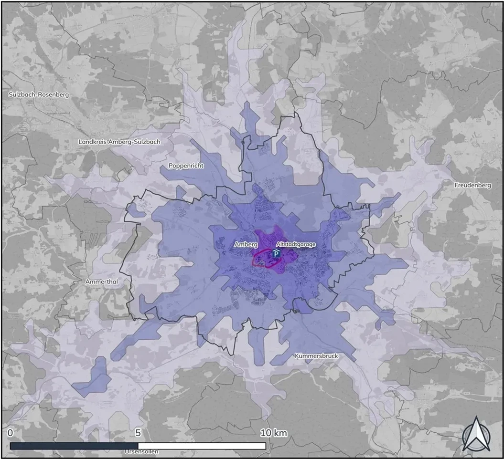

Überblick
Zwei Erreichbarkeitsreports für die Stadt Amberg und ihre historische Altstadt, erstellt mit GOAT. Der erste Report untersuchte, wie gut verschiedene Ziele in der Amberger Innenstadt von den vorhandenen Parkmöglichkeiten aus erreichbar sind. Der zweite analysierte und verglich verschiedene Varianten einer geplanten neuen Radwegeverbindung, „Höchste Eisenbahn".
Der Parkraum-Report beantwortete vier Fragestellungen: wie gut Parkhäuser und Parkplätze mit dem Auto erreichbar sind; wie gut der Marktplatz mit dem Fahrrad erreichbar ist; wie fußläufig erreichbar wichtige Points of Interest von den Parkmöglichkeiten aus sind; und wo es Angebotslücken im Parkraum gibt. Der Radweg-Report modellierte den Erreichbarkeitsgewinn der neuen Verbindung für Anwohnende und wichtige Ziele und verglich eine Variante ohne Unterführung mit einer Variante mit Unterführung.
Ich habe die Erreichbarkeitsanalysen — zu Fuß, mit dem Fahrrad und mit dem Auto — durchgeführt und die Kartografie für beide Reports erstellt.
Kunde: Stadt Amberg · Laufzeit: 2023–2024
Auf Plan4Better ansehen ↗Analyseworkflow
Schritte aufklappen, um die Details zu lesen.
01Parkraum-Inventar
Erfassung sämtlicher innerstädtischer Parkhäuser, Parkflächen und Straßenparkplätze in der Amberger Altstadt, inklusive Kapazität je Anlage.
02Multimodale Erreichbarkeitsanalyse
Analyse der fußläufigen Erreichbarkeit von Parkmöglichkeiten zu wichtigen Points of Interest, der Radverkehrserreichbarkeit zum Marktplatz sowie der Auto-Erreichbarkeit der Altstadtgarage aus der weiteren Region.
03Identifikation von Angebotslücken
Identifikation von Lücken im Parkraumangebot im Verhältnis zu Nachfrage und Zielerreichbarkeit in der gesamten Innenstadt.
04Variantenvergleich Radweg
Modellierung des geplanten Radwegs „Höchste Eisenbahn" und Vergleich des Erreichbarkeitsgewinns für Anwohnende und POIs zwischen einer Variante ohne Unterführung und einer Variante mit Unterführung.
Fußläufige Erreichbarkeit
Fußläufige Erreichbarkeit von den innerstädtischen Parkmöglichkeiten zu öffentlichen Einrichtungen und Points of Interest, dargestellt in 3/5/7/10-Minuten-Einzugsbereichen.


Auto-Erreichbarkeit
Einzugsbereiche des motorisierten Individualverkehrs (MIV) zur Altstadtgarage aus der weiteren Amberger Region, bei 5/10/15/20-Minuten-Schwellenwerten.


Radweganalyse
Für den geplanten Radweg „Höchste Eisenbahn" verglich der Report den Erreichbarkeitsgewinn gegenüber dem Ist-Zustand für zwei Varianten: ohne Unterführung und mit Unterführung — mit einer Quantifizierung, wie viel besser Anwohnende und wichtige Ziele durch die jeweilige Option erschlossen würden.
Tools & Technologien
- GOAT (Plan4Better) — multimodale Erreichbarkeitsanalyse und kartografische Aufbereitung
- Erreichbarkeitsanalyse zu Fuß, mit dem Rad und mit dem Auto (MIV)
- Innerstädtisches Parkraum-Inventar mit Kapazitätsdaten
- Szenarienvergleich für geplante Radverkehrsinfrastruktur
Fazit
Geliefert wurden zwei Erreichbarkeitsreports, die der Stadt Amberg eine evidenzbasierte Grundlage für Entscheidungen zu Parkraum und Radverkehr in ihrer historischen Altstadt liefern — mit konkret benannten Lücken im aktuellen Parkraumangebot und einer quantifizierten Erreichbarkeitsverbesserung durch eine neue Radwegeverbindung in zwei Ausbauvarianten.